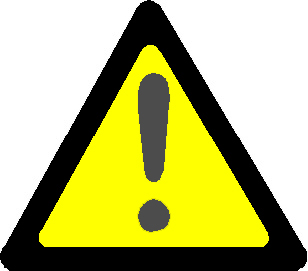

Recomendações para Diagnósticos
Antes de iniciar o roteiro para solução da falha
 |
Atenção! • Verificar se os cabos de bateria estão apertados, sem sinal de violação ou ligação incorreta; • Verificar se a bateria está carregando corretamente e os bornes estão ausentes de impurezas; • Verificar se a amperagem da bateria está de acordo com as especificações da aplicação; • Verificar o estado geral do alternador (regulador de voltagens, cabos, etc.) quanto a sinais de violação ou ligação incorreta. |
Para evitar danos aos pinos e ao chicote
Atenção! • Use pontas de prova próprias para o teste quando fizer uma medição; • Nunca aplique a ponta do multímetro direto no terminal em teste. |
Antes de qualquer verificação nos módulos eletrônicos
Atenção! • Inspecionar os pinos conectores dos chicotes e dos módulos eletrônicos quanto a corrosão, pinos tortos ou presença de umidade; • Usar somente pontas de prova próprias para o teste ao fazer a medição; • Verificar todos os códigos de falha ativos. |
Antes de substituir o bico injetor ou reparar / substituir o chicote elétrico
Atenção! • Inspecionar os pinos conectores dos chicotes e do ECM quanto a corrosão,pinos tortos ou presença de umidade; • Usar somente pontas de prova próprias para o teste ao fazer medição; • Verificar todos os códigos de falha ativos; • Certificar que as porcas do chicote estejam apertadas nos terminais do solenóide do injetor, conforme o valor correto de torque; • Inspecionar as porcas com terminal dos injetores e certificar de que não há curto-circuito com a massa entre os fios e qualquer parte metálica sob a tampa de válvulas. |
Antes de substituir qualquer componente do sistema de alta pressão de combustível
Atenção! • Inspecionar os pinos conectores dos chicotes e do ECM quanto a corrosão, pinos tortos ou presença de umidade; • Usar somente pontas de prova próprias para o teste ao fazer a medição; • Verificar todos os códigos de falha ativos. |
Antes de substituir sensores e/ou reparar / substituir o chicote elétrico
Atenção! • Inspecionar os pinos conectores dos chicotes e do ECM quanto a corrosão, pinos tortos ou presença de umidade; • Usar somente pontas de prova próprias para o teste ao fazer a medição; • Verificar todos os códigos de falha ativos. |
| Topo da Página |
|---|